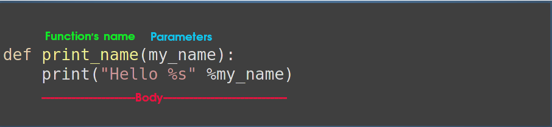

Functions
- Functions are chunks of code that tell python to do something
- The reason to use functions is usability and code clearness
- For complex programs, functions are essential
- A function has:

How to use
def say_hello(my_name):
print("Hello %s" %my_name)
say_hello("Joe") # Hello Joe
Multiple Parameters
- A function can have any number of parameters
def say_hello(first_name, last_name):
print("Hello %s %s" %(first_name, last_name))
say_hello("Joe", "Cocker") # Hello Joe Cocker
first="Joe"
last="Cocker"
say_hello(first, last)
Variables Scope
- When a function ends running, all its variables vanish
def scope():
a=10
print(a)
scope() # 10
print(a) #ERROR
- If we have defined a variable in the program and the function redefined it, then the value in the function is used in the function scope
a=5
def scope():
a=10
print(a)
scope() # 10
print(a) # 5
The return statement
- To let a function return a value, use the return statement
def my_function(x):
return 5 * x
my_function(3)
print(my_function(5)) # 25
print(my_function(9)) # 45
Summary
def increment(x):
return x + 1
result = increment(3)
print(result) # 4
- Colon(:) indicates the start of a block
- Following lines are indented
- Function declaration does not specify a return type
- All functions return a value (None if not specified)
- A function can have multiple parameters
- Parameter data types are not specified
- Be aware of variables scope
- Use the return statement if you want the function will return a value
Example - is even?
def is_even(number):
if number % 2 == 0:
return True
else:
return False
is_even(5) # False
is_even(3) # False
is_even(2) # True
Example - Recursion
- A function that calls itself until a specified condition is met.
def my_print(message, repeat_times):
if repeat_times == 0:
return
print(message)
my_print(message, repeat_times - 1)
my_print("ROSE", 5) # ROSE ROSE ROSE ROSE ROSE